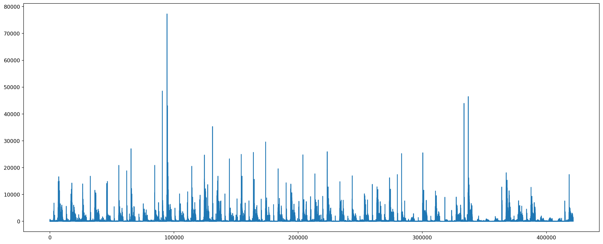
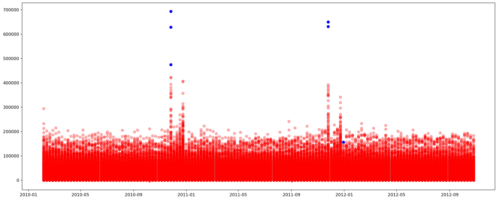

import warnings
warnings.filterwarnings('ignore')
import pandas as pd
import numpy as np
import seaborn as sns
import matplotlib.pyplot as plt
from datetime import datetimeIn machine learning, an anomaly refers to an observation or data point that deviates significantly from the expected or normal behavior within a dataset. Anomalies are also known as outliers, novelties, or exceptions. Detecting anomalies is important in various fields, such as fraud detection, network security, manufacturing quality control, and healthcare.
The process of identifying anomalies is called anomaly detection, and it involves building models or algorithms to distinguish normal patterns from abnormal ones. The definition of what is considered normal or anomalous can vary depending on the specific application and the nature of the data.
Anomalies can take various forms, such as unexpected spikes or drops in numerical values, unusual patterns in time series data, or rare events in categorical data. The choice of the anomaly detection method depends on the characteristics of the data and the specific requirements of the application.
There are various anomaly detection algorithms in machine learning, each with its strengths and weaknesses. Here are some commonly used anomaly detection algorithms:
Isolation Forest: Isolation Forest is an algorithm that isolates anomalies by randomly selecting a feature and then randomly selecting a split value between the maximum and minimum values of the selected feature. Anomalies are likely to be isolated in fewer splits than normal instances.
One-Class SVM (Support Vector Machine): One-Class SVM is a support vector machine algorithm that is trained only on normal data. It learns a decision boundary around normal instances, and anomalies are identified as instances lying outside this boundary.
Local Outlier Factor (LOF):LOF measures the local density deviation of a data point with respect to its neighbors. Anomalies are identified as instances with significantly lower local density compared to their neighbors.
Autoencoders:Autoencoders are neural networks trained to reconstruct input data. Anomalies are detected by measuring the difference between the input and the reconstructed output. Unusually high reconstruction errors indicate anomalies.
K-Nearest Neighbors (KNN):KNN measures the distance of a data point to its k-nearest neighbors. Anomalies are identified as instances with a significantly greater average distance to their neighbors.
Principal Component Analysis (PCA):PCA transforms the data into a lower-dimensional space, and anomalies can be identified by their distance from the
The choice of algorithm depends on the characteristics of the data and the specific requirements of the anomaly detection task. It’s common to experiment with multiple algorithms to determine which one performs best for a given dataset and context.
Let us look at one of the algorithms in detail.
K-Nearest Neighbors
First lets import the necessari libraries.
In this blog, we will look at anomalous data in Walmart transaction. Lets read the data, and look at how it is.
walmart = pd.read_csv('walmart.csv')
walmart.head()| Unnamed: 0 | Store | Date | IsHoliday | Dept | Weekly_Sales | Temperature | Fuel_Price | MarkDown1 | MarkDown2 | MarkDown3 | MarkDown4 | MarkDown5 | CPI | Unemployment | Type | Size | |
|---|---|---|---|---|---|---|---|---|---|---|---|---|---|---|---|---|---|
| 0 | 0 | 1 | 2010-02-05 | 0 | 1.0 | 24924.50 | 42.31 | 2.572 | 0.0 | 0.0 | 0.0 | 0.0 | 0.0 | 211.096358 | 8.106 | 3 | 151315 |
| 1 | 1 | 1 | 2010-02-05 | 0 | 26.0 | 11737.12 | 42.31 | 2.572 | 0.0 | 0.0 | 0.0 | 0.0 | 0.0 | 211.096358 | 8.106 | 3 | 151315 |
| 2 | 2 | 1 | 2010-02-05 | 0 | 17.0 | 13223.76 | 42.31 | 2.572 | 0.0 | 0.0 | 0.0 | 0.0 | 0.0 | 211.096358 | 8.106 | 3 | 151315 |
| 3 | 3 | 1 | 2010-02-05 | 0 | 45.0 | 37.44 | 42.31 | 2.572 | 0.0 | 0.0 | 0.0 | 0.0 | 0.0 | 211.096358 | 8.106 | 3 | 151315 |
| 4 | 4 | 1 | 2010-02-05 | 0 | 28.0 | 1085.29 | 42.31 | 2.572 | 0.0 | 0.0 | 0.0 | 0.0 | 0.0 | 211.096358 | 8.106 | 3 | 151315 |
walmart.info()<class 'pandas.core.frame.DataFrame'>
RangeIndex: 421570 entries, 0 to 421569
Data columns (total 17 columns):
# Column Non-Null Count Dtype
--- ------ -------------- -----
0 Unnamed: 0 421570 non-null int64
1 Store 421570 non-null int64
2 Date 421570 non-null object
3 IsHoliday 421570 non-null int64
4 Dept 421570 non-null float64
5 Weekly_Sales 421570 non-null float64
6 Temperature 421570 non-null float64
7 Fuel_Price 421570 non-null float64
8 MarkDown1 421570 non-null float64
9 MarkDown2 421570 non-null float64
10 MarkDown3 421570 non-null float64
11 MarkDown4 421570 non-null float64
12 MarkDown5 421570 non-null float64
13 CPI 421570 non-null float64
14 Unemployment 421570 non-null float64
15 Type 421570 non-null int64
16 Size 421570 non-null int64
dtypes: float64(11), int64(5), object(1)
memory usage: 54.7+ MBNow let us clean the data and extract only those fields that we need.
walmart['Date'] = pd.to_datetime(walmart['Date'])
walmart['Year'] = pd.to_datetime(walmart['Date']).dt.year
walmart['Month'] = pd.to_datetime(walmart['Date']).dt.month
#data['Week'] = pd.to_datetime(data['Date']).dt.week
walmart['DayOfTheWeek'] = walmart['Date'].dt.dayofweek
walmart['Day'] = pd.to_datetime(walmart['Date']).dt.day
walmart_df = walmart[['Date', 'IsHoliday', 'Dept', 'Weekly_Sales',
'Temperature', 'Fuel_Price', 'MarkDown1', 'MarkDown2', 'MarkDown3',
'MarkDown4', 'MarkDown5', 'CPI', 'Unemployment', 'Type', 'Size']]
walmart_df.set_index('Date', inplace=True)
walmart_df.info()<class 'pandas.core.frame.DataFrame'>
DatetimeIndex: 421570 entries, 2010-02-05 to 2012-10-26
Data columns (total 14 columns):
# Column Non-Null Count Dtype
--- ------ -------------- -----
0 IsHoliday 421570 non-null int64
1 Dept 421570 non-null float64
2 Weekly_Sales 421570 non-null float64
3 Temperature 421570 non-null float64
4 Fuel_Price 421570 non-null float64
5 MarkDown1 421570 non-null float64
6 MarkDown2 421570 non-null float64
7 MarkDown3 421570 non-null float64
8 MarkDown4 421570 non-null float64
9 MarkDown5 421570 non-null float64
10 CPI 421570 non-null float64
11 Unemployment 421570 non-null float64
12 Type 421570 non-null int64
13 Size 421570 non-null int64
dtypes: float64(11), int64(3)
memory usage: 48.2 MBFit the data to a K-nearest neighbour model to find anomalies.
X = walmart_df.values
from sklearn.neighbors import NearestNeighbors
nbrs = NearestNeighbors(n_neighbors = 3)
nbrs.fit(X)
distances, indexes = nbrs.kneighbors(X)
plt.figure(figsize=(20,8))
plt.plot(distances.mean(axis =1))
Plot the points to see if any data point looks like an anomaly.
outlier_idx = np.where(distances.mean(axis = 1) > 35000)
outlier_val = walmart.iloc[outlier_idx]
outlier_val
plt.figure(figsize=(20,8))
plt.scatter(walmart_df.index,walmart_df["Weekly_Sales"] ,color = "r",alpha=0.3)
otlr_val = walmart_df.iloc[outlier_idx]
plt.scatter(otlr_val.index,otlr_val["Weekly_Sales"], color = "b")<matplotlib.collections.PathCollection at 0x7fb6c0d7c310>